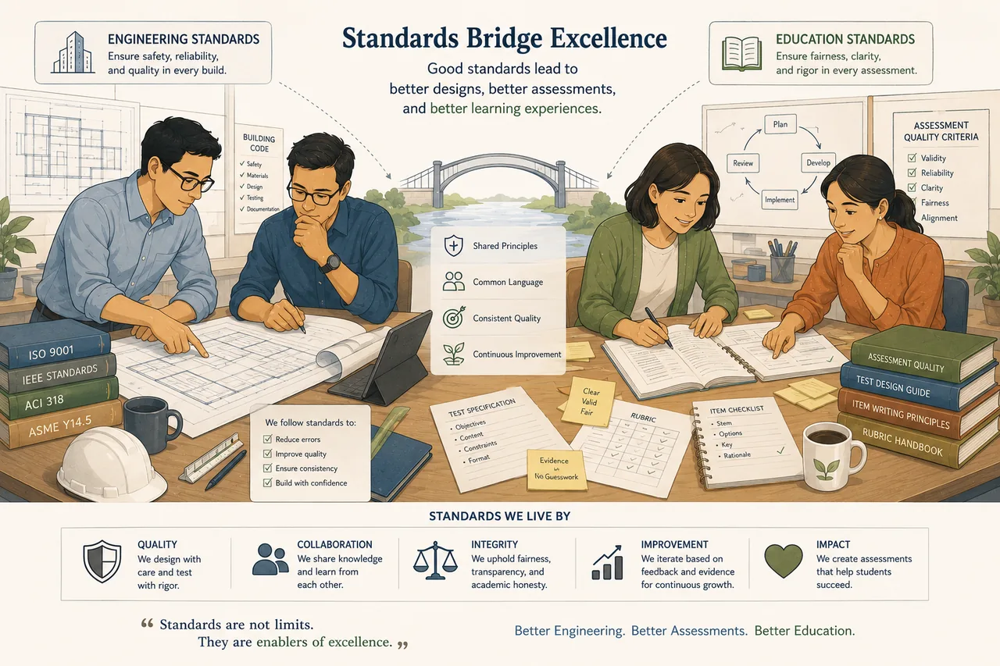

Standards
Consistent. Fair. Objective.
Standards make assessments predictable for teachers and fair for students. Python and Markdown style keep them readable; a six-rule scoring model keeps grading objective.

The scoring model
Six rules, one formula
Every assessment is graded the same way — automatically, objectively, and immediately.
Equal weight
Every unit test counts the same.
One behavior each
Each test measures one observable behavior.
Percentage score
Score = percentage of passing tests.
Independent
Tests are independent whenever practical.
Hidden tests
Assess documented behavior only — never surprise students.
Balanced count
Test count balances coverage with meaningful feedback.
score = ( passing tests ÷ total tests ) × 100%
Read the standards
Standard documents
Select a card to load the full document — rendered live from the repository.
Live document
Assessment Scoring
See it graded
Every assessment family ships with its unit-test suite — run them and grade automatically.